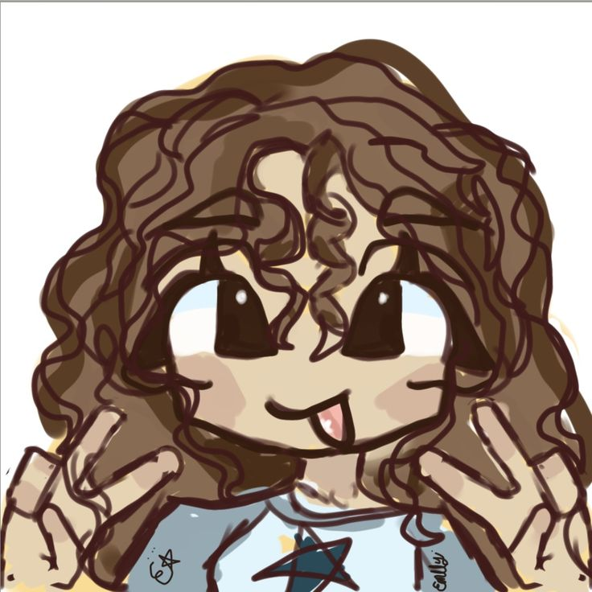
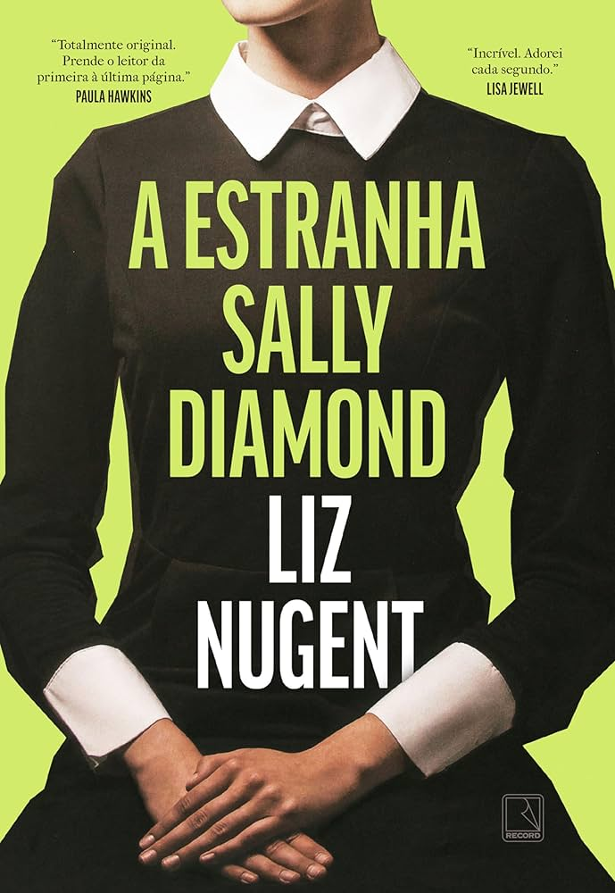
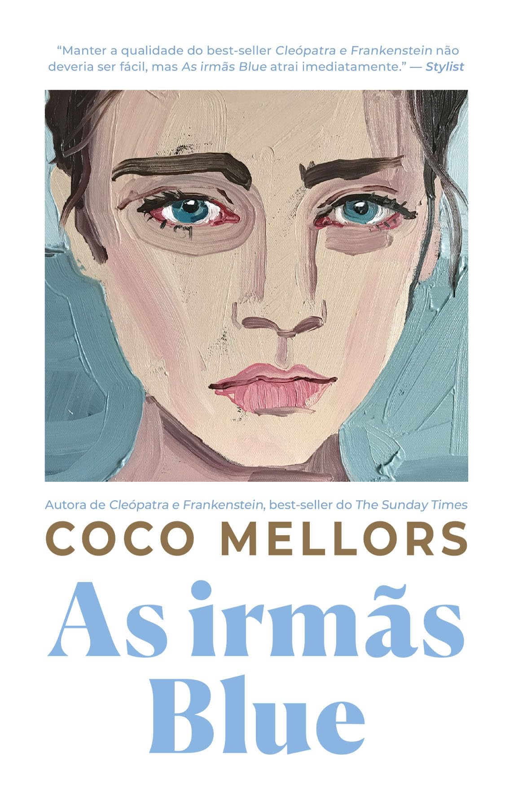
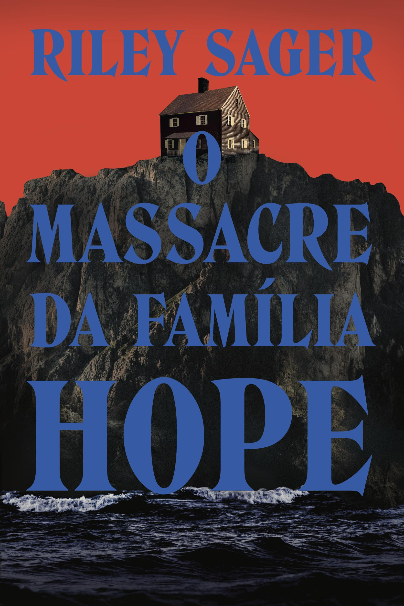
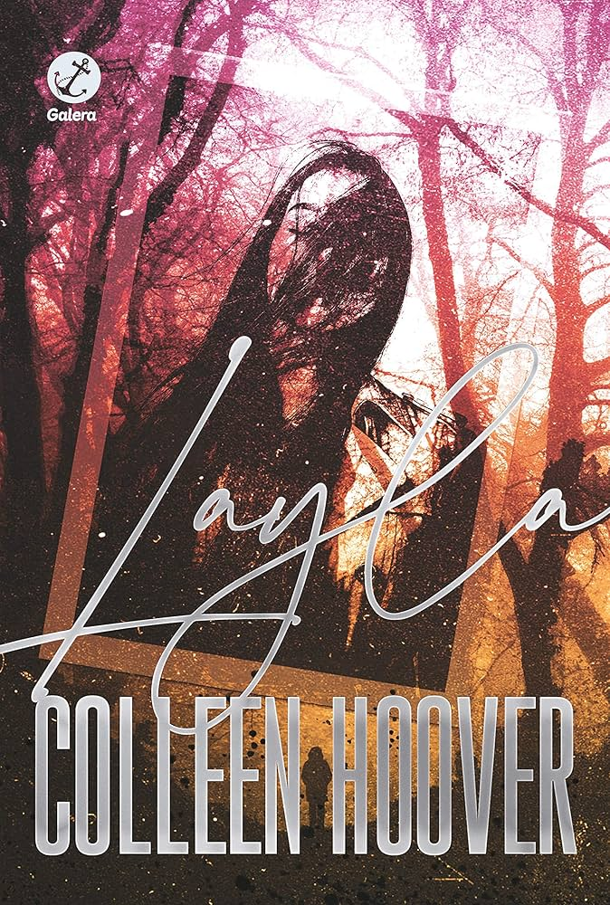
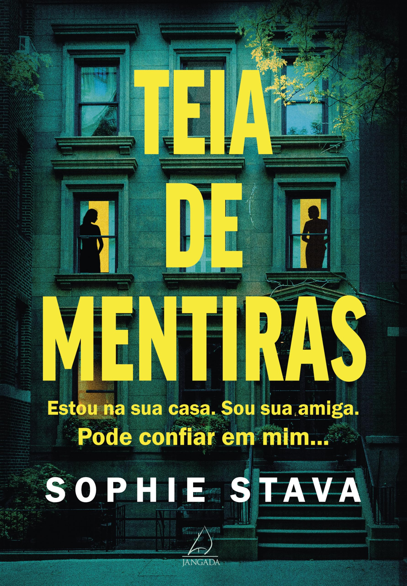

Isa's Reading Diary

oie =D me chamo Isabela, tenho 22 anos e sou programadora. mas além de gostar de programar, gosto também de ler livros, e fiz essa página no intuito de falar de algumas das minhas leituras mais recentes.
Minha leitura favorita da vida

Sally é uma mulher socialmente isolada que leva tudo ao pé da letra, até mesmo um comentário do pai, o que desencadeia uma situação chocante e muda completamente sua vida. A partir disso, segredos do passado começam a surgir, revelando uma história muito mais sombria do que parece. Esse foi, sem dúvida, meu livro favorito. Comecei sem expectativa nenhuma e acabei completamente presa na história. É diferente dos thrillers comuns, com uma protagonista única e um desenvolvimento que surpreende o tempo todo. E o final… foi o que mais me impactou, Fiquei literalmente =O
Leituras mais recentes

Ainda estou lendo! Mas até agora estou amando, me sentindo representada com a protagonista que é da área de programação/jogos
Justin acredita ter uma “maldição”: sempre que um relacionamento
dele termina, sua ex encontra o amor da vida logo depois. Quando
Emma, que passa pela mesma situação, entra em contato, os dois
decidem namorar com prazo para acabar, tudo para “quebrar” isso. O
que era pra ser algo leve e temporário acaba tomando um rumo bem
mais profundo.
Eu gostei muito além do romance. A história da Emma com a mãe traz
questões bem pesadas, e acompanhar o momento em que ela começa a
se libertar disso foi muito marcante pra mim. Dá pra ver como isso
impacta diretamente na forma como ela vive e se permite ser feliz.
E uma das coisas que mais levei comigo foi: se puder escolher
entre a raiva e a empatia, escolha a empatia. É algo simples, mas
muda totalmente a forma de enxergar as pessoas e as situações.
Blake vê sua vida desmoronar depois de perder o emprego e decide
alugar um quarto da casa para conseguir se manter. Quando Whitney
aparece, parecendo a inquilina perfeita, tudo parece se encaixar…
até que coisas estranhas começam a acontecer, transformando o
ambiente em algo cada vez mais perturbador.
Bom pra caramba! Eu amo a escrita da Freida, e esse livro me
prendeu do começo ao fim. Já desconfiava de algumas coisas e até
acertei partes do que ia acontecer, mas aquele plot específico do
final me pegou completamente desprevenida, fiquei em choque real.
É aquele tipo de história que vai te envolvendo aos poucos e,
quando você vê, já caiu direitinho na armadilha junto com o
personagem.
Maggie retorna à casa onde viveu experiências traumáticas na
infância para reformá-la, mas acaba sendo puxada de volta para os
mistérios e eventos assustadores que marcaram seu passado. Entre
memórias, relatos e segredos escondidos, ela começa a questionar o
que é real, e o que aquela casa ainda esconde.
QUE livro, sério. Foi uma experiência absurda de boa. Eu tava
completamente imersa na versão da Maggie, entendendo tudo… até que
as coisas começam a mudar e simplesmente explode na sua cara. O
plot me deixou sem palavras real. E assim, daria um FILME de
terror perfeito, sem esforço nenhum. Muito, muito bom.

Após a morte inesperada de Nicky, três irmãs retornam à casa da
família em Nova York e precisam lidar com o luto, os próprios
conflitos e as marcas do passado. Entre segredos, vícios e
relações complexas, elas tentam entender quem são sem a pessoa que
as mantinha unidas.
Achei um livro um tanto melancólico, admito que tive raiva de
algumas personagens (menos Bonnie, minha protegida ❤︎). Totalmente
fora da minha zona de conforto, já que sou do time thriller, e no
começo foi mais difícil de engatar — quase abandonei. Mas ainda
bem que não fiz isso. O final vale muito a pena, e a história é
muito real, muito humana. Dá pra sentir que aquilo poderia
acontecer com qualquer pessoa, e acho que é isso que torna tudo
ainda mais forte.

O livro acompanha o massacre da família Hope, ocorrido em 1929,
onde três membros foram assassinados e apenas Lenora sobreviveu,
tornando-se a principal suspeita do crime. Anos depois, a história
ainda carrega mistérios e dúvidas sobre o que realmente aconteceu
naquela noite.
Cara, esse livro tem MUITOS plots, mas todos jogados no final, e
isso me incomodou um pouco. Achei informação demais de uma vez só,
teria sido muito mais interessante se fosse desenvolvido ao longo
da história. Mas enfim, humilde opinião de leitora. Ainda assim, o
plot principal me pegou de verdade (Lenora não é nada do que a
gente imagina), e esse sim foi O
momento do livro pra mim.

Claire decide viajar com o marido e amigos para tentar aliviar a
crise no casamento, mas o que era pra ser um descanso vira um
pesadelo quando o grupo se perde na floresta e começa a ser
atacado misteriosamente, um por um.
Cara… livro ok. Não foi aquele MEU DEUS QUE PLOT, mas também não é
ruim. O final foi o que mais gostei, principalmente pela forma
como trouxe reflexões sobre relacionamento. Meio que reforça
coisas que a gente já sabe, mas às vezes ignora. E assim… não
espere precisar quase morrer numa floresta pra resolver seu
casamento, né.

Leeds e Layla vivem um relacionamento leve e intenso até que um
ataque muda completamente a vida dos dois. Tentando recuperar o
que tinham, ele a leva de volta ao lugar onde se conheceram, mas
acontecimentos estranhos começam a surgir, e tudo fica ainda mais
confuso quando uma nova conexão entra em cena.
Não foi minha melhor leitura… se desse pra recuperar os 14 reais,
eu recuperava. Mas, pra não dizer que foi de todo ruim, a conexão
entre Leeds e Layla é muito boa, bem intensa mesmo. Pena que o
desenvolvimento não me prendeu tanto quanto eu esperava.

Sloane é uma mentirosa compulsiva que acaba se envolvendo com uma
família aparentemente perfeita ao fingir ser enfermeira. Mas,
conforme se aproxima dos Lockhart, percebe que por trás da
perfeição existem segredos sombrios — e suas próprias mentiras
começam a sair do controle.
QUE LIVROOOOO MEUS AMIGOS. QUE. LIVRO.